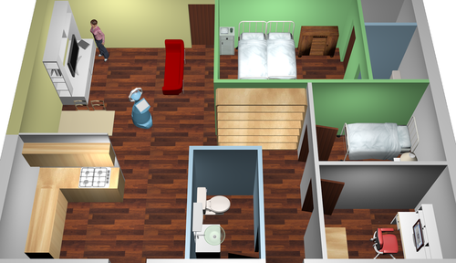
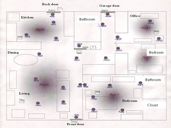
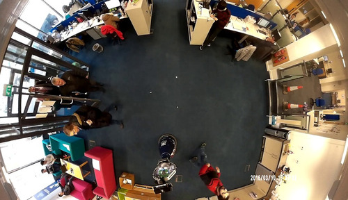
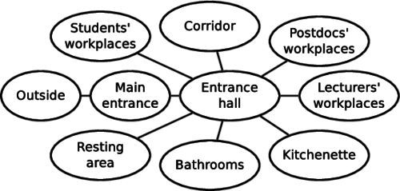

This dataset contains information about a given person activity over several weeks. It was used to evaluate which type of spatio-temporal models improve the accuracy of activity classification over time. The dataset contains information about human activity in two different environments:
|  |  |
| Aruba apartment visualisation | Aruba sensor layout (see CASAS) |
The Aruba folder contains activity.min, which indicates the ativity performed by a home-bound person in a small apartment every minute for 16 weeks. The locations.min contain the person location (room) minute-by-minute as well. The location.names and activity.names indicate which rooms and activitie correspond to which number in the activity.min and location.min files. Example: number 0 on line 10 of the location.min means and 2 on activity.min that in 10th minute after midnight of the first day, the person was Eating in the Master bedroom. Aruba was extracted from the CASAS datasets.
|  |  |
| Witham office overview | Witham office topological layout |
The Witham Wharf directory contains activity of a particular student in an open-plan office for three weeks. Again, locations.names and activity.names files describe the locations and activities, which are stored in location.min and activity.min files.
All of these datasets are available for download in a single archive file. After you unzip the file, you get two folders which correspond to the individual datasets.
If you use the dataset for your research, please cite our paper that describes it. We attached a bibtex record for your convenience. If you use the Aruba subset, you must also acknowledge the original CASAS paper.